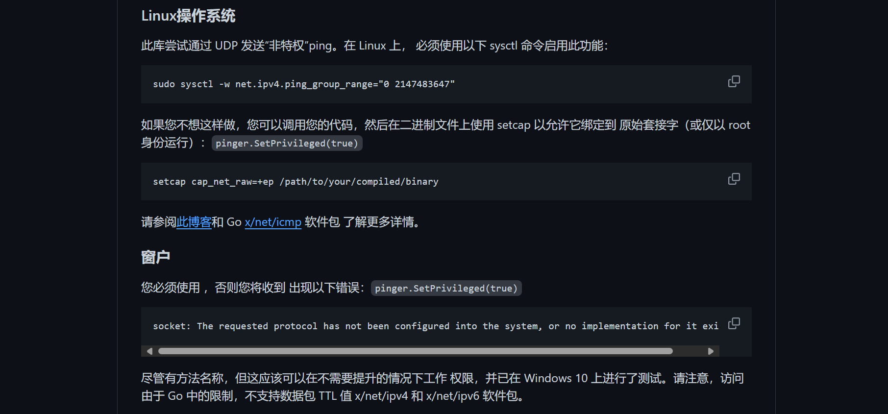
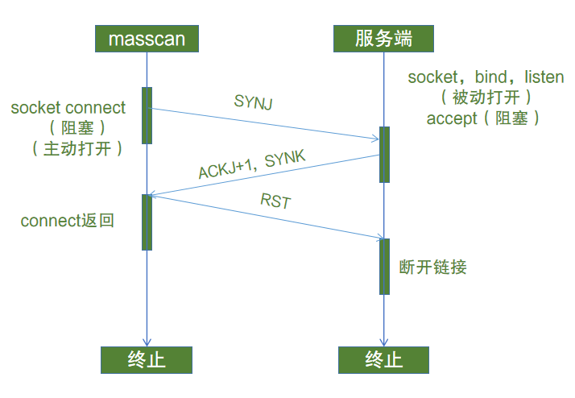
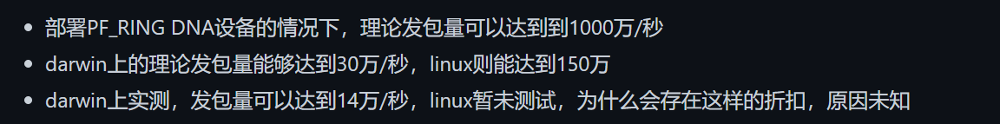
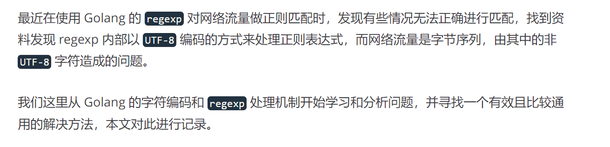

go-Portscan 源码学习
- date
- 2024-02-20 12:08:51
项目介绍
项目地址：https://github.com/XinRoom/go-portScan
一款端口扫描方面很全面的工具：
- 主机验活
- 端口扫描
- 端口指纹识别
- WEB指纹识别
项目结构
| ├─cmd
├─core
│ ├─host # 主机验活
│ └─port
│ ├─fingerprint # 指纹识别
│ │ └─webfinger # web指纹识别
│ ├─syn # syn 端口扫描
│ └─tcp # tcp 端口扫描
└─util
└─httputil
|
主机验活
core/host/ping.go
这里验活用的是 3 种方式：
| func IsLive(ip string, tcpPing bool, tcpTimeout time.Duration) (ok bool) {
if CanIcmp {
ok = IcmpOK(ip)
} else {
ok = PingOk(ip)
}
if !ok && tcpPing {
ok = TcpPing(ip, TcpPingPorts, tcpTimeout)
}
return
}
|
- 使用
github.com/go-ping/ping 包发送 ICMP 进行主机验活
| func IcmpOK(host string) bool {
pinger, err := ping.NewPinger(host)
if err != nil {
return false
}
pinger.SetPrivileged(true)
pinger.Count = 1
pinger.Timeout = 800 * time.Millisecond
if pinger.Run() != nil { // Blocks until finished. return err
return false
}
if stats := pinger.Statistics(); stats.PacketsRecv > 0 {
return true
}
return false
}
|
- 执行系统
ping 命令
| func PingOk(host string) bool {
switch runtime.GOOS {
case "linux":
cmd := exec.Command("ping", "-c", "1", "-W", "1", host)
var out bytes.Buffer
cmd.Stdout = &out
cmd.Run()
if strings.Contains(out.String(), "ttl=") {
return true
}
case "windows":
cmd := exec.Command("ping", "-n", "1", "-w", "500", host)
var out bytes.Buffer
cmd.Stdout = &out
cmd.Run()
if strings.Contains(out.String(), "TTL=") {
return true
}
case "darwin":
cmd := exec.Command("ping", "-c", "1", "-t", "1", host)
var out bytes.Buffer
cmd.Stdout = &out
cmd.Run()
if strings.Contains(out.String(), "ttl=") {
return true
}
}
return false
}
|
- 对常见的端口进行 TCP 连接
| func TcpPing(host string, ports []uint16, timeout time.Duration) (ok bool) {
var wg sync.WaitGroup
ctx, cancel := context.WithCancel(context.Background())
d := net.Dialer{
Timeout: timeout + time.Second,
KeepAlive: 0,
}
for _, port := range ports {
time.Sleep(10 * time.Millisecond)
wg.Add(1)
go func(_port uint16) {
conn, err := d.DialContext(ctx, "tcp", fmt.Sprintf("%s:%d", host, _port))
if conn != nil {
conn.Close()
ok = true
} else if err != nil && strings.Contains(err.Error(), "refused it") { // 表明对端发送了RST包
ok = true
}
if ok {
cancel()
}
wg.Done()
}(port)
}
wg.Wait()
return
}
|
这里即使用了 ping 包又使用了 ping 命令可能是 ping 包有一定的使用限制：

Linux 要启用 sudo sysctl -w net.ipv4.ping_group_range="0 2147483647" 的，不是都直接可以通用了的，所以又添加了一个执行 ping 命令的函数。
然后还有一个 TCP 连接常见端口的：
| var TcpPingPorts = []uint16{80, 22, 445, 23, 443, 81, 161, 3389, 8080, 8081}
|
这里是因为防火墙可以设置为禁 ping 默认的，所以这里就使用 TCP 连接下常见端口进行验活。
不过这种方式也是不能够完全 OK 的，所以感觉可以简化一下，或者直接对我们获取的 IP 进行全端口扫描就行了。
端口扫描
基础知识
SYN
端口扫描这里是有 2 种方式一种 SYN 还有就是 TCP ，TCP 就是使用 net.DialTimeout 去连接，这里就不细看了，主要是 SYN 。
TCP SYN 端口扫描就是所谓的半连接，TCP 连接需要进行 3 次握手，四次挥手。

这里的 SYN 扫描就是客户端发送一个 SYN ，然后只要服务端响应了 SYN+ACK 就证明其端口开放，只后就响应一个 RST 表示关闭连接。也就是这样：

使用 tcp 连接去判断端口开放就需要等待，而 syn 扫描的宗旨就是不去等待，也就是所谓了"无状态"，发送 syn 包的线程就一直发送，另起一个线程去监听响应。以此来达到快速端口扫描的目的，而到底多块其实就取决于 syn 发包的速度了，这里简单记录下 masscan 为什么能号称 "6分钟扫描全网" ，使用 syn 只是一点，更重要的其实就是 PF_RING 驱动了，它发包速率快（ 1000万/秒 ），自然扫的快了。而 pcap 最高才 150万/秒。
因为 SYN 半连接扫描的特性，端口扫描的速度也就只是受发包速率的影响了，可以看下 gomasscan 的介绍，了解下发包速率的差距。

协议介绍
| ip.addr == 47.94.225.171 && tcp
|
再看一下具体的 SYN 包：
| # 网络接口层 Ethernet II 数据帧
Ethernet II, Src: f0:a6:54:9e:08:07 (f0:a6:54:9e:08:07), Dst: HuaweiTe_2b:54:37 (10:c1:72:2b:54:37)
Destination: HuaweiTe_2b:54:37 (10:c1:72:2b:54:37) # 目标 MAC
Source: f0:a6:54:9e:08:07 (f0:a6:54:9e:08:07) # 源 MAC
Type: IPv4 (0x0800)
# 网络层 IPV4
Internet Protocol Version 4, Src: 192.168.100.21, Dst: 47.94.225.171
0100 .... = Version: 4
.... 0101 = Header Length: 20 bytes (5)
Differentiated Services Field: 0x00 (DSCP: CS0, ECN: Not-ECT)
Total Length: 52
Identification: 0x0cd3 (3283)
Flags: 0x40, Don't fragment
Fragment Offset: 0
Time to Live: 64
Protocol: TCP (6)
Header Checksum: 0xf829 [validation disabled]
[Header checksum status: Unverified]
Source Address: 192.168.100.21 # 源 IP
Destination Address: 47.94.225.171 # 目标 IP
# 传输层 TCP
Transmission Control Protocol, Src Port: 9451, Dst Port: 443, Seq: 0, Len: 0
Source Port: 9451 # 源端口
Destination Port: 443 # 目的端口
[Stream index: 758]
[TCP Segment Len: 0]
Sequence Number: 0 (relative sequence number)
Sequence Number (raw): 3976647631 # seq
[Next Sequence Number: 1 (relative sequence number)]
Acknowledgment Number: 0
Acknowledgment number (raw): 0
1000 .... = Header Length: 32 bytes (8)
Flags: 0x002 (SYN) # 标志位 => SYN
000. .... .... = Reserved: Not set
...0 .... .... = Nonce: Not set
.... 0... .... = Congestion Window Reduced (CWR): Not set
.... .0.. .... = ECN-Echo: Not set
.... ..0. .... = Urgent: Not set
.... ...0 .... = Acknowledgment: Not set
.... .... 0... = Push: Not set
.... .... .0.. = Reset: Not set
.... .... ..1. = Syn: Set
.... .... ...0 = Fin: Not set
[TCP Flags: ··········S·]
Window: 64240
[Calculated window size: 64240]
Checksum: 0x56db [unverified]
[Checksum Status: Unverified]
Urgent Pointer: 0
Options: (12 bytes), Maximum segment size, No-Operation (NOP), Window scale, No-Operation (NOP), No-Operation (NOP), SACK permitted
[Timestamps]
|
响应的 SYN + ACK：
| Transmission Control Protocol, Src Port: 443, Dst Port: 9451, Seq: 0, Ack: 1, Len: 0
Source Port: 443
Destination Port: 9451
[Stream index: 758]
[TCP Segment Len: 0]
Sequence Number: 0 (relative sequence number)
Sequence Number (raw): 2705511265 # 服务端的 SEQ
[Next Sequence Number: 1 (relative sequence number)]
Acknowledgment Number: 1 (relative ack number)
Acknowledgment number (raw): 3976647632 # ACK 应答 = 客户端的 SEQ + 1
1000 .... = Header Length: 32 bytes (8)
Flags: 0x012 (SYN, ACK) # 标志位 SYN, ACK
000. .... .... = Reserved: Not set
...0 .... .... = Nonce: Not set
.... 0... .... = Congestion Window Reduced (CWR): Not set
.... .0.. .... = ECN-Echo: Not set
.... ..0. .... = Urgent: Not set
.... ...1 .... = Acknowledgment: Set
.... .... 0... = Push: Not set
.... .... .0.. = Reset: Not set
.... .... ..1. = Syn: Set
.... .... ...0 = Fin: Not set
[TCP Flags: ·······A··S·]
Window: 29200
[Calculated window size: 29200]
Checksum: 0x6b37 [unverified]
[Checksum Status: Unverified]
Urgent Pointer: 0
Options: (12 bytes), Maximum segment size, No-Operation (NOP), No-Operation (NOP), SACK permitted, No-Operation (NOP), Window scale
[SEQ/ACK analysis]
[Timestamps]
|
可以看到，如果需要去构造一个 SYN 请求需要这些字段：
- 源 MAC、目标 MAC
- 源 IP、目标 IP
- 源端口、目标端口
- SEQ
其他字段都可以去固定，或者生成，只有这些是需要我们指定的。
目标 MAC 的获取是需要 ARP ，简单介绍一下，这个协议是用来寻找 IP 地址对应的 MAC 地址的，注意是内网 IP 对应的 MAC ~
对应公网 IP 我们的目的 MAC 就是我们网卡的 MAC 地址 ~
| # ARP 请求
Address Resolution Protocol (request)
Hardware type: Ethernet (1)
Protocol type: IPv4 (0x0800)
Hardware size: 6
Protocol size: 4
Opcode: request (1)
Sender MAC address: HuaweiTe_2b:54:37 (10:c1:72:2b:54:37) # 源 MAC
Sender IP address: 192.168.100.1 # 源 IP
Target MAC address: 00:00:00_00:00:00 (00:00:00:00:00:00)
Target IP address: 192.168.100.21 # 目标 IP
# ARP 响应
Address Resolution Protocol (reply)
Hardware type: Ethernet (1)
Protocol type: IPv4 (0x0800)
Hardware size: 6
Protocol size: 4
Opcode: reply (2)
Sender MAC address: f0:a6:54:9e:08:07 (f0:a6:54:9e:08:07) # 源 MAC 也就是请求收到响应了
Sender IP address: 192.168.100.21 # 源 IP
Target MAC address: HuaweiTe_2b:54:37 (10:c1:72:2b:54:37)
Target IP address: 192.168.100.1
|
接下来就看 go-Portscan 是怎样实现这些的吧。
SYN 扫描
| comm.go // 配置信息 ( 速率、超时时间 )
device.go // 设备信息 ( 源 IP、MAC、网关 MAC、活动的网卡名称 )
syn.go // SYN 端口扫描的主逻辑
watchIpStatus.go // IP 状态表 ( 用于监听线程的超时、是否为目标的 SYN+ACK 报文的判断 )
watchMacCache.go // MAC 状态表 ( 监听线程获取的 ARP 响应中的 IP 和 MAC )
|
先整体过一遍代码，再去按照流程进行分析。
device.go 就是去获取网卡信息，源 IP、MAC、网关 MAC、网卡名称
也对应了上面说的 SYN 请求包需要的一些信息
| // 获取所有 pcap 网卡的名称
func GetAllDevs() (string, error) {
pcapDevices, err := pcap.FindAllDevs()
if err != nil {
return "", errors.New(fmt.Sprintf("list pcapDevices failed: %s", err.Error()))
}
var buf strings.Builder
for _, dev := range pcapDevices {
buf.WriteString(fmt.Sprint("Dev:", dev.Name, "\tDes:", dev.Description))
if len(dev.Addresses) > 0 {
buf.WriteString(fmt.Sprint("\tAddr:", dev.Addresses[0].IP.String()))
}
buf.WriteString("\n")
}
return buf.String(), nil
}
// 通过 IP 获取网卡名称
func GetDevByIp(ip net.IP) (devName string, err error) {
devices, err := pcap.FindAllDevs()
if err != nil {
return
}
for _, d := range devices {
for _, address := range d.Addresses {
_ip := address.IP.To4()
if _ip != nil && _ip.IsGlobalUnicast() && _ip.Equal(ip) {
return d.Name, nil
}
}
}
return "", errors.New("can not find dev")
}
// 通过 IP 获取获取指定网络接口的信息 IP MAC
func GetIfaceMac(ifaceAddr net.IP) (src net.IP, mac net.HardwareAddr) {
interfaces, _ := net.Interfaces()
for _, iface := range interfaces {
if addrs, err := iface.Addrs(); err == nil {
for _, addr := range addrs {
if addr.(*net.IPNet).Contains(ifaceAddr) {
return addr.(*net.IPNet).IP, iface.HardwareAddr
}
}
}
}
return nil, nil
}
// 获取指定网关（Gateway）IP地址所在网络接口的IP地址、MAC地址、设备名称
func GetMacByGw(gw net.IP) (srcIp net.IP, srcMac net.HardwareAddr, devname string, err error) {
// 获取指定网关IP地址所在网络接口的IP地址和MAC地址
srcIp, srcMac = GetIfaceMac(gw)
if srcIp == nil {
err = errors.New("can not find this dev by gw")
return
}
srcIp = srcIp.To4()
devices, err := pcap.FindAllDevs()
if err != nil {
return
}
// 通过刚刚的IP获取出设备地址
for _, d := range devices {
if len(d.Addresses) > 0 && d.Addresses[0].IP.String() == srcIp.String() {
devname = d.Name
return
}
}
err = errors.New("can not find this dev")
return
}
// 通过 IP 获取路由信息
func GetRouterV4(dst net.IP) (srcIp net.IP, srcMac net.HardwareAddr, gw net.IP, devName string, err error) {
// 同网段
srcIp, srcMac = GetIfaceMac(dst)
if srcIp == nil {
// 通过 github.com/libp2p/go-netroute 来获取路由信息 => 网关 源 IP
var r routing.Router
r, err = netroute.New()
if err == nil {
var iface *net.Interface
iface, gw, srcIp, err = r.Route(dst)
if err == nil {
// 获取 MAC 地址
if iface != nil {
srcMac = iface.HardwareAddr
} else {
_, srcMac = GetIfaceMac(srcIp)
}
}
}
if err != nil || srcMac == nil {
// 取第一个默认路由
gw, err = gateway.DiscoverGateway()
if err == nil {
srcIp, srcMac = GetIfaceMac(gw)
}
}
}
gw = gw.To4()
srcIp = srcIp.To4()
// 获取设备名称
devName, err = GetDevByIp(srcIp)
if srcIp == nil || err != nil || srcMac == nil {
if err == nil {
err = fmt.Errorf("err")
}
return nil, nil, nil, "", fmt.Errorf("no router, %s", err)
}
return
}
|
然后就是 syn.go 这是 SYN 扫描的主逻辑：
NewSynScanner 这里就是先获取下设备的基础信息：
| // 获取基础信息
if option.NextHop != "" {
gw = net.ParseIP(option.NextHop).To4()
srcIp, srcMac, devName, err = GetMacByGw(gw)
} else {
srcIp, srcMac, gw, devName, err = GetRouterV4(firstIp)
}
|
然后把这些信息传入 SynScanner，因为这些基本每个 SYN 包都要使用，所以先获取了。
然后就是设置过滤器，启动监听协程了：
| handle, err := pcap.OpenLive(devName, 1024, false, pcap.BlockForever)
if err != nil {
return
}
// ARP 或者 SYN ACK 报文
handle.SetBPFFilter(fmt.Sprintf("ether dst %s && (arp || tcp[tcpflags] == tcp-syn|tcp-ack)", srcMac.String()))
ss.handle = handle
// 启动监听协程
go ss.recv()
|
监听这里：
- ARP 响应：获取其 MAC 地址，存入 MAC 表中
- ACK 响应：先看 IP 表，是否有，是否监听超时了，如果没有就记录下来，再响应其一个 RST 报文
| for {
// ....
if arpLayer.SourceProtAddress != nil {
// ARP 响应获取其中的 IP MAC 存入到 MAC 监视表
ipStr = net.IP(arpLayer.SourceProtAddress).String()
if ss.watchMacCacheT.IsNeedWatch(ipStr) {
ss.watchMacCacheT.SetMac(ipStr, arpLayer.SourceHwAddress)
}
arpLayer.SourceProtAddress = nil // clean arp parse status
continue
}
// TCP 协议 并且是响应给我们的报文 ( 通过端口判断, 发包指定的端口是有范围的 )
if tcpLayer.DstPort != 0 && tcpLayer.DstPort >= 49000 && tcpLayer.DstPort <= 59000 {
ipStr = ipLayer.SrcIP.String()
_port = uint16(tcpLayer.SrcPort)
// 判断 IP 是否为目标 IP
if !ss.watchIpStatusT.HasIp(ipStr) {
continue
} else {
if ss.watchIpStatusT.HasPort(ipStr, _port) { // PORT
continue
} else {
ss.watchIpStatusT.RecordPort(ipStr, _port) // record
}
}
// 如果是 SYN ACK
if tcpLayer.SYN && tcpLayer.ACK {
// 收集开放端口
ss.openPortChan <- port.OpenIpPort{
Ip: ipLayer.SrcIP,
Port: _port,
}
// 解析信息 发送 RST 报文
eth.DstMAC = ethLayer.SrcMAC
ip4.DstIP = ipLayer.SrcIP
tcp.DstPort = tcpLayer.SrcPort
tcp.SrcPort = tcpLayer.DstPort
// RST && ACK
tcp.Ack = tcpLayer.Seq + 1
tcp.Seq = tcpLayer.Ack
tcp.SetNetworkLayerForChecksum(&ip4)
ss.send(ð, &ip4, &tcp)
}
tcpLayer.DstPort = 0 // clean tcp parse status
}
}
|
然后看看发包：
| func (ss *SynScanner) Scan(dstIp net.IP, dst uint16) (err error) {
// 速率限制
// 与 recv 协同，当队列缓冲区到达80%时降半速，90%将为1/s
if len(ss.openPortChan)*10 >= cap(ss.openPortChan)*8 {
if ss.option.Rate/2 != 0 {
ss.limiter.SetLimit(limiter.Every(time.Second / time.Duration(ss.option.Rate/2)))
}
} else if len(ss.openPortChan)*10 >= cap(ss.openPortChan)*9 {
ss.limiter.SetLimit(1)
} else {
ss.limiter.SetLimit(limiter.Every(time.Second / time.Duration(ss.option.Rate)))
}
dstIp = dstIp.To4()
if dstIp == nil {
return errors.New("is not ipv4")
}
// 添加到 IP 监视表中 => 记录好更新时间
ipStr := dstIp.String()
ss.watchIpStatusT.UpdateLastTime(ipStr)
// 获取目标 MAC 地址
var dstMac net.HardwareAddr
if ss.gwMac != nil {
dstMac = ss.gwMac
} else {
// 内网IP => MAC 就是网卡的 MAC
mac := ss.watchMacCacheT.GetMac(ipStr)
if mac != nil {
dstMac = mac
} else {
// 通过 ARP 请求获取目的 MAC
dstMac, err = ss.getHwAddrV4(dstIp)
if err != nil {
return
}
}
}
// 构造 SYN 数据包
// 网络接口层
eth := layers.Ethernet{
SrcMAC: ss.srcMac,
DstMAC: dstMac,
EthernetType: layers.EthernetTypeIPv4,
}
// 网络层
ip4 := layers.IPv4{
SrcIP: ss.srcIp,
DstIP: dstIp,
Version: 4,
TTL: 128,
Id: uint16(40000 + rand.Intn(10000)),
Flags: layers.IPv4DontFragment,
Protocol: layers.IPProtocolTCP,
}
// 传输层
tcp := layers.TCP{
// 随机源端口 限定了范围 在监听哪里就使用了这个去做过滤
SrcPort: layers.TCPPort(49000 + rand.Intn(10000)), // Random source port and used to determine recv dst port range
DstPort: layers.TCPPort(dst),
SYN: true,
Window: 65280,
Seq: uint32(500000 + rand.Intn(10000)),
Options: []layers.TCPOption{
{
OptionType: layers.TCPOptionKindMSS,
OptionLength: 4,
OptionData: []byte{0x05, 0x50}, // 1360
},
{
OptionType: layers.TCPOptionKindNop,
},
{
OptionType: layers.TCPOptionKindWindowScale,
OptionLength: 3,
OptionData: []byte{0x08},
},
{
OptionType: layers.TCPOptionKindNop,
},
{
OptionType: layers.TCPOptionKindNop,
},
{
OptionType: layers.TCPOptionKindSACKPermitted,
OptionLength: 2,
},
},
}
tcp.SetNetworkLayerForChecksum(&ip4)
// 发包
ss.send(ð, &ip4, &tcp)
return
}
|
它这里的发包使用了一个 buf 池，这个比较好，复用
| func (ss *SynScanner) send(l ...gopacket.SerializableLayer) error {
buf := ss.bufPool.Get().(gopacket.SerializeBuffer)
defer func() {
buf.Clear()
ss.bufPool.Put(buf)
}()
if err := gopacket.SerializeLayers(buf, ss.opts, l...); err != nil {
return err
}
return ss.handle.WritePacketData(buf.Bytes())
}
|
在看一下它的 ARP 获取 MAC 的：
| func (ss *SynScanner) getHwAddrV4(arpDst net.IP) (mac net.HardwareAddr, err error) {
ipStr := arpDst.String()
if ss.watchMacCacheT.IsNeedWatch(ipStr) {
return nil, errors.New("arp of this ip has been in monitoring")
}
// 添加到 MAC 监视表中 构造 ARP 请求包
ss.watchMacCacheT.UpdateLastTime(ipStr) // New one ip watch
eth := layers.Ethernet{
SrcMAC: ss.srcMac,
DstMAC: net.HardwareAddr{0xff, 0xff, 0xff, 0xff, 0xff, 0xff},
EthernetType: layers.EthernetTypeARP,
}
arp := layers.ARP{
AddrType: layers.LinkTypeEthernet,
Protocol: layers.EthernetTypeIPv4,
HwAddressSize: 6,
ProtAddressSize: 4,
Operation: layers.ARPRequest,
SourceHwAddress: []byte(ss.srcMac),
SourceProtAddress: []byte(ss.srcIp),
DstHwAddress: []byte{0, 0, 0, 0, 0, 0},
DstProtAddress: []byte(arpDst),
}
// 发包
if err = ss.sendArp(ð, &arp); err != nil {
return nil, err
}
start := time.Now()
var retry int
// MAC监视表获取
for {
mac = ss.watchMacCacheT.GetMac(ipStr)
if mac != nil {
return mac, nil
}
// Wait 600 ms for an ARP reply.
if time.Since(start) > time.Millisecond*600 {
return nil, errors.New("timeout getting ARP reply")
}
retry += 1
if retry%25 == 0 {
if err = ss.send(ð, &arp); err != nil {
return nil, err
}
}
time.Sleep(time.Millisecond * 10)
}
}
|
整体的 SYN 端口扫描看完了，其主要流程：
- 获取设备基础信息 => 源 MAC、IP ....
- 启动监听协程
- ARP => 添加到 ARP 表中
- ACK => 先判断端口范围，再判断是否在 IP 监视表中是否超时等待，再去获取开放端口，然后就是响应 RST 报文
- 发包协程
- 通过 ARP 获取目标 MAC 地址
- 构造 SYN 进行发包
指纹识别
指纹识别在 fingerprint 包，先看下端口的指纹识别：
| fingerprint.go // 端口指纹识别逻辑
rules.go // 端口指纹规则
|
先看下规则的样子，端口的指纹识别和 WEB 的其实差不多，都是通过判断响应中是否有匹配的字段。
这里是端口默认对应的服务，在端口识别的时候优先判断对应的服务会快很多，而不需要全部规则都判断。
| var portServiceOrder = map[uint16][]string{
21: {"ftp"},
22: {"ssh"},
80: {"http", "https"},
443: {"https", "http"},
445: {"smb"},
1035: {"oracle"},
1080: {"socks5", "socks4"},
1081: {"socks5", "socks4"},
1082: {"socks5", "socks4"},
1083: {"socks5", "socks4"},
1433: {"sqlserver"},
1521: {"oracle"},
1522: {"oracle"},
1525: {"oracle"},
1526: {"oracle"},
1574: {"oracle"},
1748: {"oracle"},
1754: {"oracle"},
3306: {"mysql"},
3389: {"ms-wbt-server"},
6379: {"redis"},
9001: {"mongodb"},
11211: {"memcached"},
14238: {"oracle"},
27017: {"mongodb"},
20000: {"oracle"},
49153: {"mongodb"},
}
|
端口的规则：
| serviceRules["http"] = serviceRule{
// TLS 加密
Tls: false,
DataGroup: []ruleData{
{
// 发送的数据 => HTTP 的需要发送一个 HTTP 请求
ActionSend,
[]byte("HEAD / HTTP/1.1\r\nHost: {IP}\r\nUser-Agent: Mozilla/5.0 (Windows NT 10.0; Win64; x64; rv:91.0) Gecko/20100101 Firefox/91.0\r\nAccept: */*\r\nAccept-Language: en\r\nAccept-Encoding: deflate\r\n\r\n"),
nil,
},
{
// 响应流中包含 HTTP/ 则证明就是 HTTP 服务
ActionRecv,
[]byte("HTTP/"),
nil,
},
},
}
serviceRules["ssh"] = serviceRule{
Tls: false,
DataGroup: []ruleData{
{
// SSH 的规则 如果匹配这些规则就证明是 SSH
ActionRecv,
nil,
[]*regexp.Regexp{
regexp.MustCompile(`^SSH-([\d.]+)-`),
regexp.MustCompile(`^SSH-(\d[\d.]+)-`),
regexp.MustCompile(`^SSH-(\d[\d.]*)-`),
regexp.MustCompile(`^SSH-2\.0-`),
regexp.MustCompile(`^SSH-1\.`),
},
},
},
}
|
这里可以看出端口指纹的规则和 WEB 还是有不同之处的，有些协议需要特定的请求才行。
这些规则来自于 nmap ：raw.githubusercontent.com/nmap/nmap/master/nmap-service-probes
在看看具体是怎么识别的：
| func PortIdentify(network string, ip net.IP, _port uint16, dailTimeout time.Duration) (serviceName string, banner []byte, isDailErr bool) {
// 记录已经匹配过的规则
matchedRule := make(map[string]struct{})
// 记录已经匹配过的服务
recordMatched := func(s string) {
matchedRule[s] = struct{}{}
// 检查是否有关联规则，若有，则一并记录
if gf, ok := groupFlows[s]; ok {
for _, s2 := range gf {
matchedRule[s2] = struct{}{}
}
}
}
// 未知服务类型
unknown := "unknown"
var sn string
// 优先判断port可能的服务
if serviceNames, ok := portServiceOrder[_port]; ok {
for _, service := range serviceNames {
// 记录匹配的规则
recordMatched(service)
// 尝试匹配规则，返回匹配的服务类型、banner和错误信息
sn, banner, isDailErr = matchRule(network, ip, _port, service, dailTimeout)
// 如果匹配成功，则返回匹配结果
if sn != "" {
return sn, banner, false
} else if isDailErr { // 如果发生了连接错误，则直接返回错误信息
return unknown, banner, isDailErr
}
}
}
// 对于只接收数据的服务类型
{
var conn net.Conn
var n int
buf := readBufPool.Get().([]byte)
defer func() {
readBufPool.Put(buf)
}()
address := fmt.Sprintf("%s:%d", ip, _port)
// 尝试与目标地址建立连接
conn, _ = net.DialTimeout(network, address, dailTimeout)
if conn == nil {
return unknown, banner, true
}
// 尝试读取数据
n, _ = read(conn, buf)
conn.Close()
// 如果成功读取到数据
if n != 0 {
banner = buf[:n]
// 对于只接收数据的服务类型，尝试使用已知的规则进行匹配
for _, service := range onlyRecv {
_, ok := matchedRule[service]
if ok {
continue
}
// 尝试匹配规则
for _, rule := range serviceRules[service].DataGroup {
if matchRuleWhithBuf(buf[:n], ip, _port, rule) {
return service, banner, false
}
}
}
}
// 记录已经匹配过的只接收数据的服务类型
for _, service := range onlyRecv {
recordMatched(service)
}
}
// 优先判断Top服务
for _, service := range serviceOrder {
_, ok := matchedRule[service]
if ok {
continue
}
recordMatched(service)
sn, banner, isDailErr = matchRule(network, ip, _port, service, dailTimeout)
if sn != "" {
return sn, banner, false
} else if isDailErr {
return unknown, banner, true
}
}
// other
for service := range serviceRules {
_, ok := matchedRule[service]
if ok {
continue
}
sn, banner, isDailErr = matchRule(network, ip, _port, service, dailTimeout)
if sn != "" {
return sn, banner, false
} else if isDailErr {
return unknown, banner, true
}
}
// 如果没有匹配到服务类型，则返回未知服务类型
return unknown, banner, false
}
|
具体流程：
- 先获取该端口的默认服务，然后使用 matchRule 进行服务判断，记录下现在匹配的服务
- 匹配一些不需要发送特定请求的服务，使用 net.DialTimeout 建立连接，匹配哪些服务的规则 记录下现在匹配的服务
- 然后去判断 TOP 服务，先看下这个服务之前是否匹配过了，没匹配过的再使用 matchRule 进行服务判断，记录下现在匹配的服务
- 到最后就是遍历所有的规则，匹配之前没匹配过的服务了
它进行服务匹配使用的是 matchRule 具体来看一看，它主要做到就是建立 TCP 连接 然后遍历规则进行判断，需要特定请求的就发送特定的请求，之后使用 matchRuleWhithBuf 函数进行规则匹配。
| func matchRule(network string, ip net.IP, _port uint16, serviceName string, dailTimeout time.Duration) (serviceNameRet string, banner []byte, isDailErr bool) {
var err error
var isTls bool
var conn net.Conn
var connTls *tls.Conn
address := fmt.Sprintf("%s:%d", ip, _port)
// 获取服务的规则
serviceRule2 := serviceRules[serviceName]
flowsService := groupFlows[serviceName]
// 建立连接 加密 或者 不加密
if serviceRule2.Tls {
connTls, err = tls.DialWithDialer(&net.Dialer{Timeout: dailTimeout}, network, address, &tls.Config{
InsecureSkipVerify: true,
MinVersion: tls.VersionTLS10,
})
if err != nil {
if strings.HasSuffix(err.Error(), ioTimeoutStr) || strings.Contains(err.Error(), refusedStr) {
isDailErr = true
return
}
return
}
defer connTls.Close()
isTls = true
} else {
conn, err = net.DialTimeout(network, address, dailTimeout)
if conn == nil {
isDailErr = true
return
}
defer conn.Close()
}
buf := readBufPool.Get().([]byte)
defer func() {
readBufPool.Put(buf)
}()
data := []byte("")
// 逐个判断
for _, rule := range serviceRule2.DataGroup {
// 替换一下里面的 {IP} {PORT} 变成现在的
if rule.Data != nil {
data = bytes.Replace(rule.Data, []byte("{IP}"), []byte(ip.String()), -1)
data = bytes.Replace(data, []byte("{PORT}"), []byte(strconv.Itoa(int(_port))), -1)
}
// 如果是需要发送特定请求的那种 就去向连接中写入相关的请求数据
if rule.Action == ActionSend {
if isTls {
connTls.SetWriteDeadline(time.Now().Add(time.Second))
_, err = connTls.Write(data)
} else {
conn.SetWriteDeadline(time.Now().Add(time.Second))
_, err = conn.Write(data)
}
if err != nil {
// 出错就退出
return
}
} else {
// 读取数据
var n int
if isTls {
n, err = read(connTls, buf)
} else {
n, err = read(conn, buf)
}
// 出错就退出
if n == 0 {
return
}
banner = buf[:n]
// 对响应的数据进行正则匹配
if matchRuleWhithBuf(buf[:n], ip, _port, rule) {
serviceNameRet = serviceName
return
}
// 可归并的服务规则组
for _, s := range flowsService {
for _, rule2 := range serviceRules[s].DataGroup {
if rule2.Action == ActionSend {
continue
}
if matchRuleWhithBuf(buf[:n], ip, _port, rule2) {
serviceNameRet = s
return
}
}
}
}
}
return
}
|
matchRuleWhithBuf 这里对规则替换，对数据转 utf-8 码后进行正则匹配 还有包含
| // 指纹匹配函数
func matchRuleWhithBuf(buf, ip net.IP, _port uint16, rule ruleData) bool {
data := []byte("")
// 逐个判断
//for _, rule := range serviceRule.DataGroup {
if rule.Data != nil {
data = bytes.Replace(rule.Data, []byte("{IP}"), []byte(ip.String()), -1)
data = bytes.Replace(data, []byte("{PORT}"), []byte(strconv.Itoa(int(_port))), -1)
}
// 进行正则匹配
if rule.Regexps != nil {
for _, _regex := range rule.Regexps {
if _regex.MatchString(convert2utf8(string(buf))) {
return true
}
}
}
// 如果包含就正确
if bytes.Compare(data, []byte("")) != 0 && bytes.Contains(buf, data) {
return true
}
return false
}
|
要转 UTF-8 再匹配是因为这个：Golang 的字符编码与 regexp (seebug.org)

之后是一个 WEB 指纹识别了；
指纹是这样的：
| {
"name": "08CMS",
"fingers": [
{
"location": "body",
"method": "keyword",
"keyword": ["content=\"08cms", "typeof(_08cms"]
},
{
"location": "body",
"method": "keyword",
"keyword": ["content=\"08CMS"]
},
{ "location": "body", "method": "keyword", "keyword": ["typeof(_08cms)"] }
]
},
|
通过正则或者关键字包含来判断：
| func iskeyword(str string, keyword []string) bool {
if len(keyword) == 0 || str == "" {
return false
}
for _, k := range keyword {
if !strings.Contains(str, k) {
return false
}
}
return true
}
func isregular(str string, keyword []string) bool {
if len(keyword) == 0 || str == "" {
return false
}
for _, k := range keyword {
re := regexp.MustCompile(k)
if !re.Match([]byte(str)) {
return false
}
}
return true
}
|
其他的和之前读过的 WEB 指纹识别差不多，就不再细写了。
学习总结
go-Portscan 在端口扫描方面做到很全，读一遍对端口扫描即端口指纹识别都有一定的了解，收获挺大。
{kind=link}
{kind=link}
{kind=link}
{kind=link}